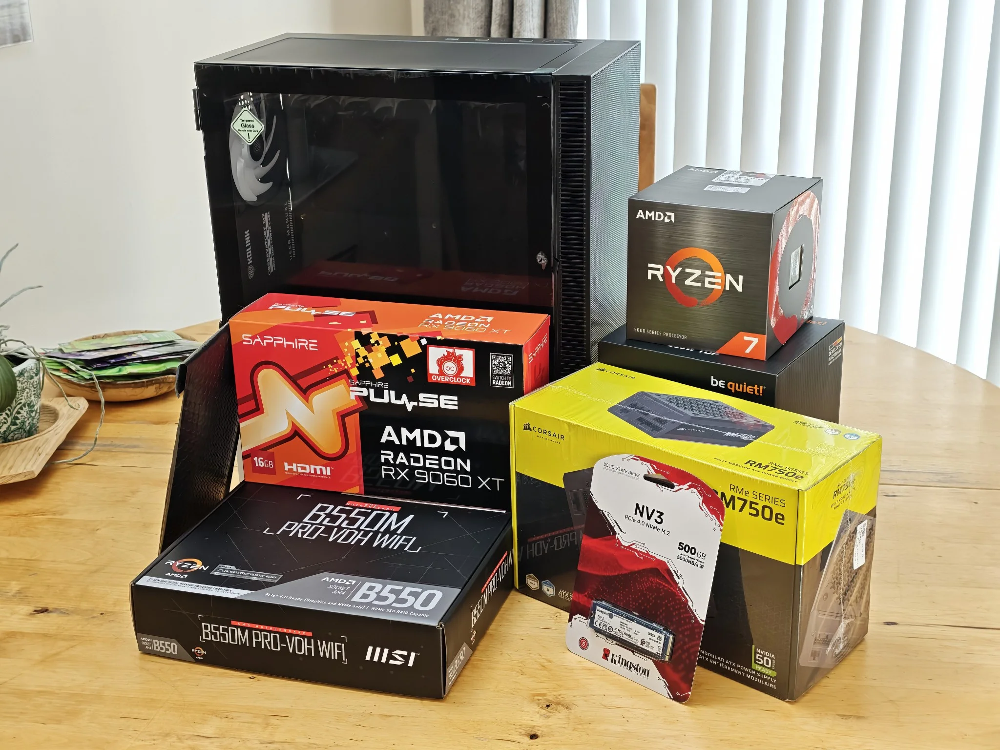
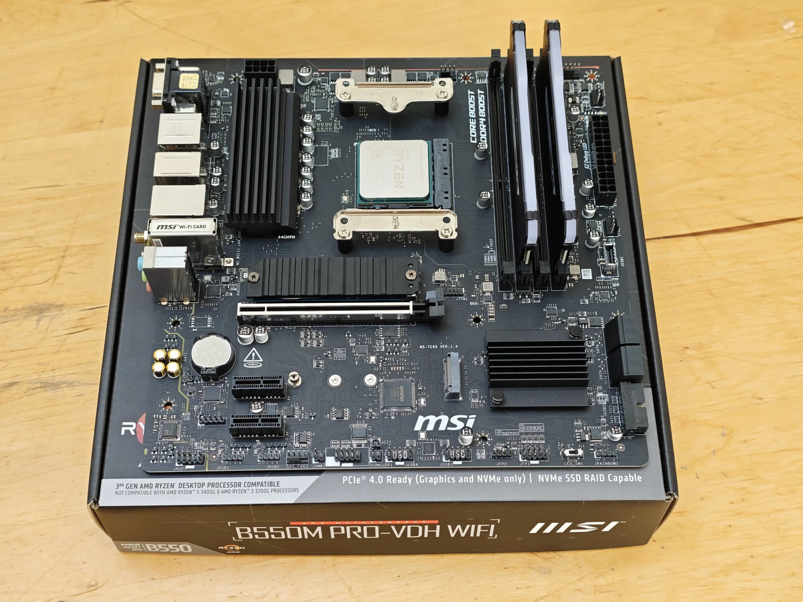
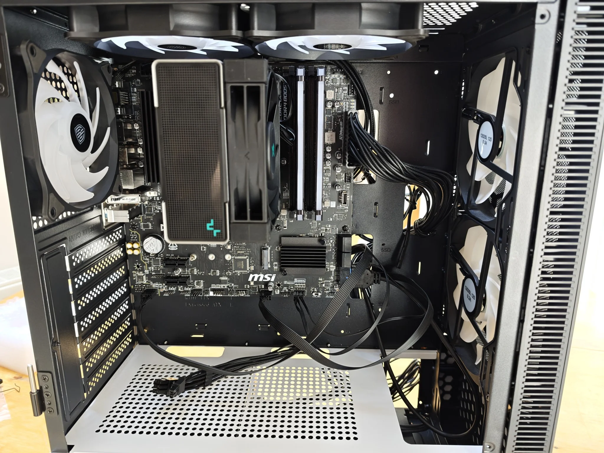
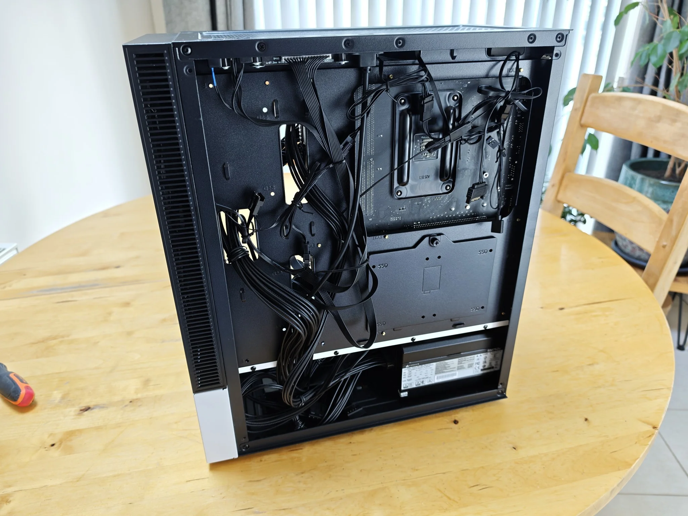
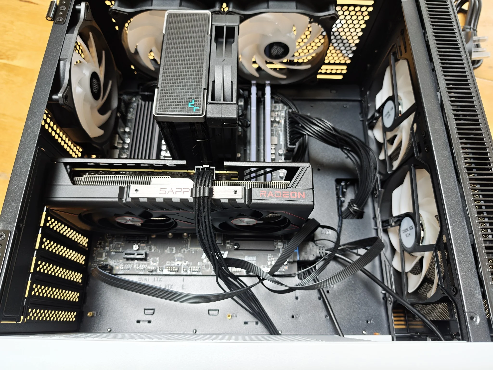
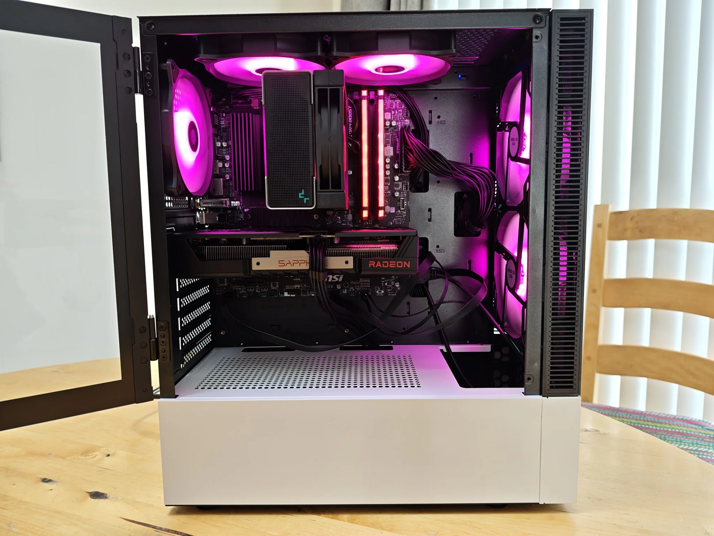
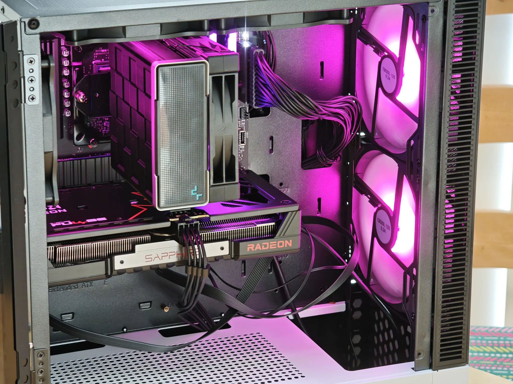
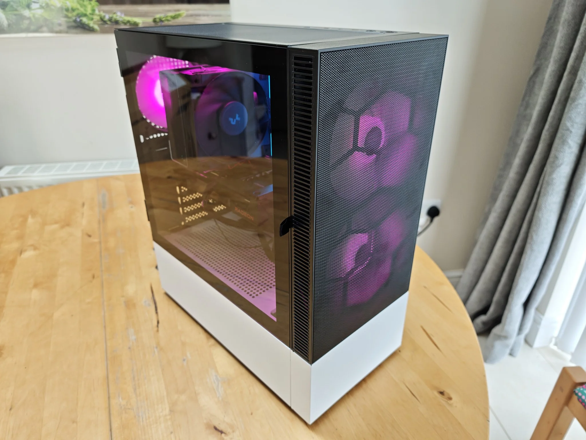
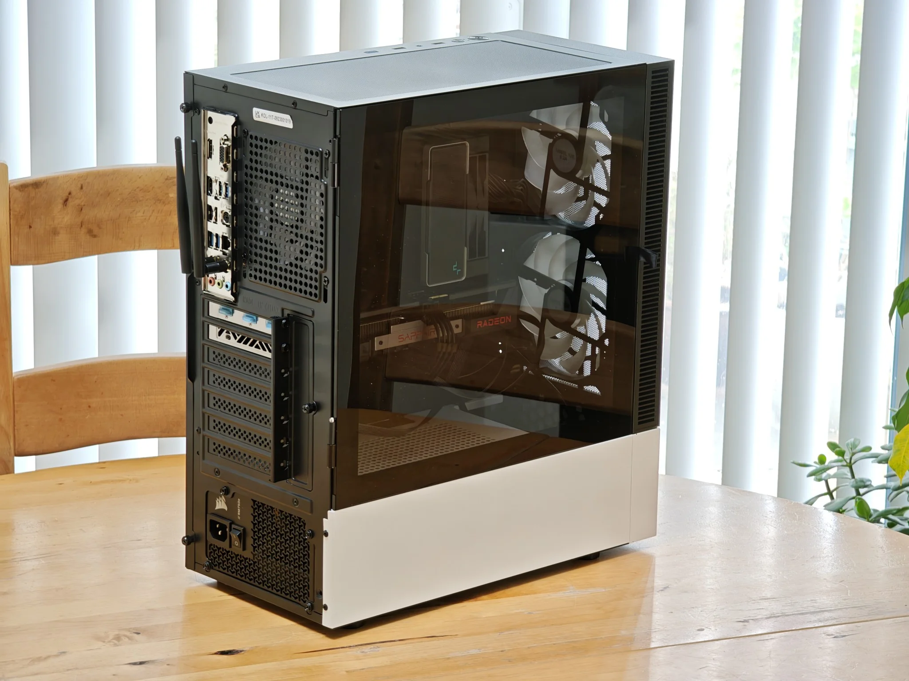
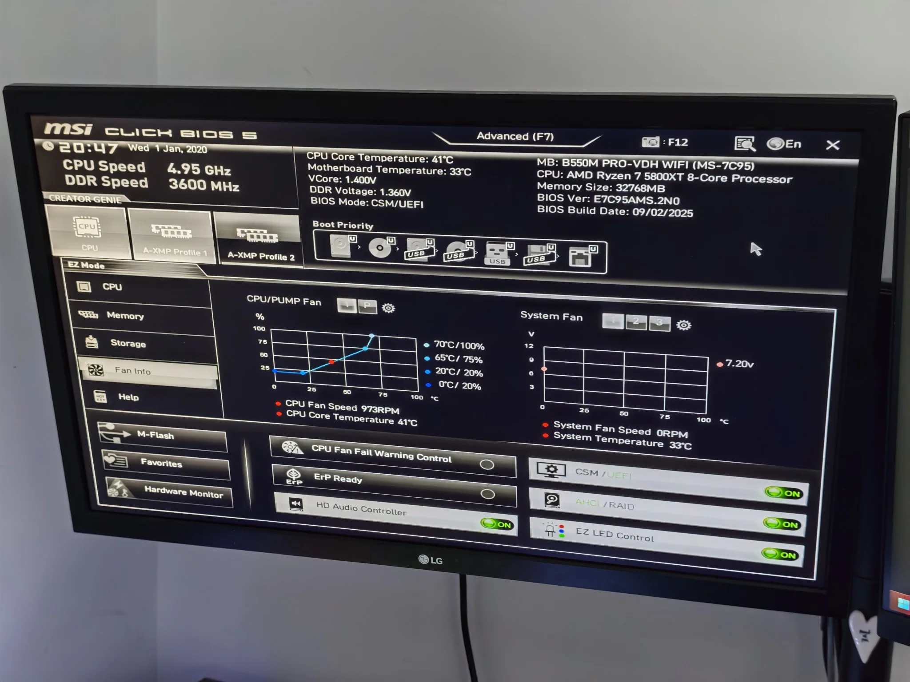

Getting things ready
Most of the components in this computer are brand-new except the RAM since I wanted to save some money on swapping a new pair with one from another computer - saving me 50% on cost.
Initially, the graphics card was going to be the RTX 3060 however from doing some research AMD GPUs are better when it comes to compatibility and software on Linux. As you can see all the components that are going into the computer build are ready on the table.


The motherboard essentials
First thing I did was to install the components that go into the motherboard in. This would include the RAM, CPU and the NVMe storage. The ram memory I used in this setup was from another set up so I could basically save on money because of the RAM crisis going on at the time of when I was making it.
CPU Cooler and those damn cables
Next, I went and put together the CPU Cooler onto the motherboard and rigged it up to the case correctly. So many cables had to be put in their place, got quite hot and bothered at one point and had to restart but eventually everything plugged into place. The cooler in question is a air-cooler and will suffice for what the computer will be used for. Additionally, the PSU was inserted and installed into the computer case as well, this also allowed me to prepare all the cables in their places so its easier to put things together down-the-line.


Backside of the motherboard
I wanted to make sure the backside of the motherboard cable management was good enough and everything was fed through where they should be going. Room needs to be left so I can eventually put a hard drive in. Furthermore, I had to make sure the lighting, fans and buttons for the case were all connected properly - I eventually learnt that it was connected wrongly and had to make changes in trying to turn the computer on.
Installing the GPU
Installing the GPU was very simple as it just slotted into place and then plugging in the power cord into the GPU correctly to avoid issues later. The GPU itself was going to be second-hand card that I already owned but I decided to go for a AMD one because from my research AMDs' are much better when using Linux based operating systems.


All the components are installed
Well that's it, the whole computer is fully built and ready to be bios tested. All components were correctly installed without any issues thankfully - nothing was damaged in the process as far as I know. Below are some images that show off the final stage of the build.


Don't forget the WIFI antennas!
The motherboard I had chosen came with a in-built WIFI adapter including a set of antennas so this computer did not need a discrete network card allowing me to connect to the internet already.


Booting into BIOS
The first major step after finishing off a computer build is to make sure it starts and that it loads up into the BIOS correctly. This is where I would ensure that the fans were working and all the components are valid.